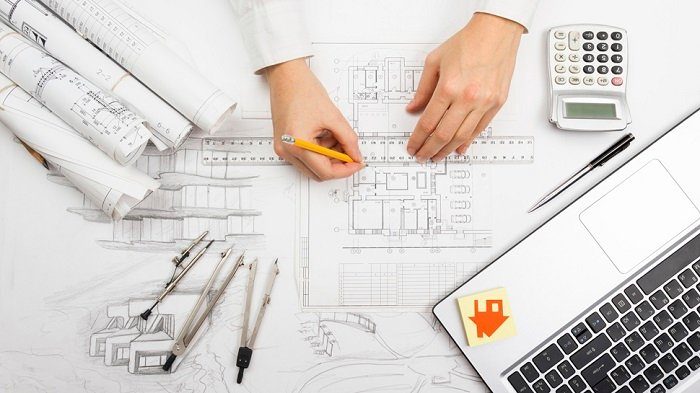
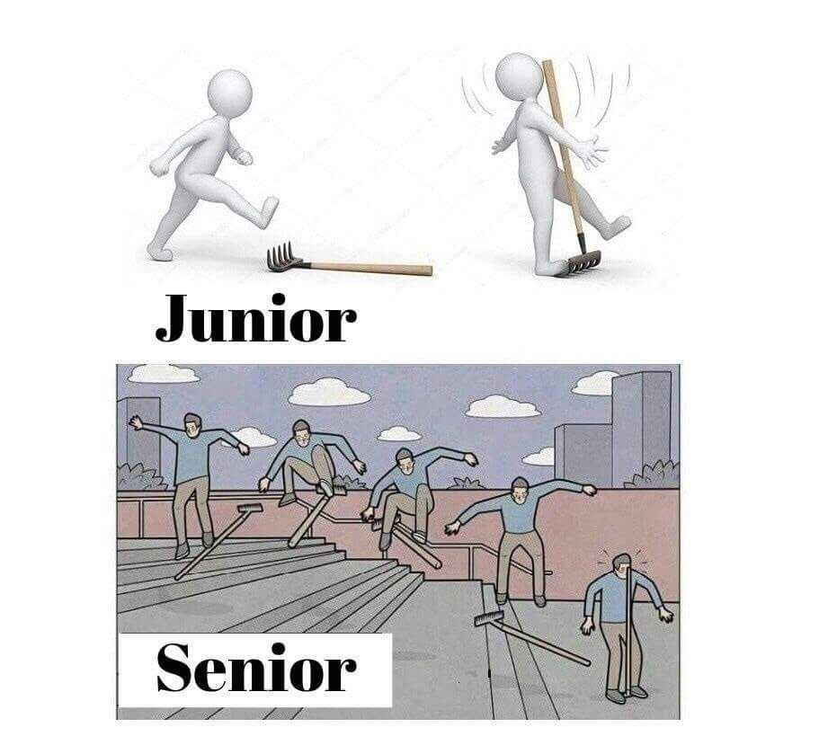
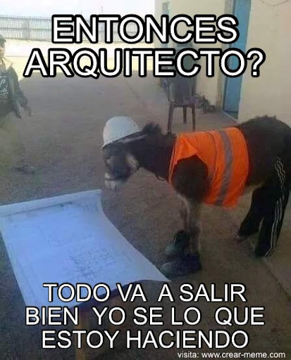

Bienvenidos a mi proyecto ocupacional
Nahuel Rodriguez
Situacion Actual
Comienzo 2021 como año Sabático en lo laboral para ingresar al mundo IT
En este año me enfoqué en estudiar, mejorando mis conocimientos y habilidades
Si bien no pausé por completo mi carrera de Arquitectura en UdelaR al comenzar el año, reduje mucho el tiempo que le prestaba, hasta que en el segundo semestre, le presté mayor atencion a Jóvenes a Programar.
El motivo de esta acción fue mejorar mi calidad laboral, generar una independencia económica estable para poder continuar formandome como Arquitecto sin procupacion laboral o falta de medios.
Objetivos a Corto Plazo(Próximos 3 meses)
Terminar el curso de Jovenes a Programar de la mejor manera
Conseguir un empleo en el área IT

Entregar en tiempo y forma, los trabajos de JaP, tanto de Programacion Web, como Transversal e Inglés.
Profundizar en tecnologías que por temas de tiempo no se pueden explicar mas a fondo(Bootstrap, CSS, JavaScript,Node.js,etc) y Otras tecnologías que no se dan en el curso(React.js y PostgreSQL)
Hacer un nuevo CV. En transversales aprendí mucho sobre cómo editar un curriculum para que llame mas la atención, además de personalizar cada curriculum, según la propuesta a aplicar
Crear cuenta de LinkedIn y buscar ofertas semanalmente
Disposición para aprender nuevas tecnologías y habilidaes
Disposición para aprender Inglés (útil en el rubro por la cantidad de clientes extranjeros)
Objetivos a Mediano Plazo(1 año)
Continuar con el segundo año de JaP

Continuar carrera de Arquitectura
Mejorar habilidades y tener un trabajo estable
Este curso me ayudó muchisimo, dentro de lo educativo pero también en mi vida personal, además estamos estudiando un área donde siempre hay que estar actualizado. La consistencia ante aprender constantemente es crucial para mejorar los resultados.
No me queda tanto, siempre dije que no tengo apuro por recibirme y sigo firme con esa idea, pero no estar apurado no significa no hacerlo, también debo ser consistente en Arquitectura que es una carrera que tanto me gusta.
Objetivos a Largo Plazo(5 años)
Ser un desarollador avanzado, apuntando a Senior
Titulo de Arquitectura

NO PARAR DE ESTUDIAR
Se entiende que estudiando otras cosas como Arquitectura podría salir alguna propuesta laboral que me impida continuar desarollandome como programador, pero la idea sería poder unir ambas ramas laborales y generar algun proyecto personal o aplicar a mis proyectos de Arquitectura, diseño de software y/o Web
Dejé lo mejor para el final, pocas teóricas y bastante taller